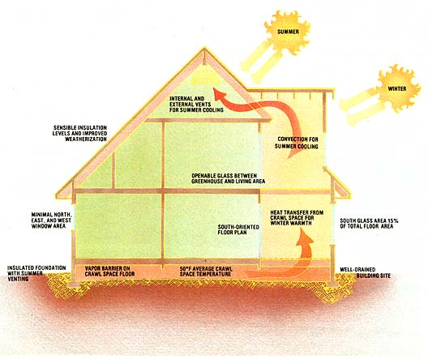

[1] Tom Smith's original thermal-envelope home, completed in 1977, provided some new insight into the double-shell controversy. [2] Steve and Tamara McKinney's dwelling in Squaw Valley, California exemplifies Smith's evolved design. It has an attached solarium and earth-coupled foundation, but no envelope, super insulation, or excess thermal mass. [3] The living area is oriented to the south, and is tempered by . . . [4] this cozy sunspace, which is linked to the insulated crawl space beneath the structure.